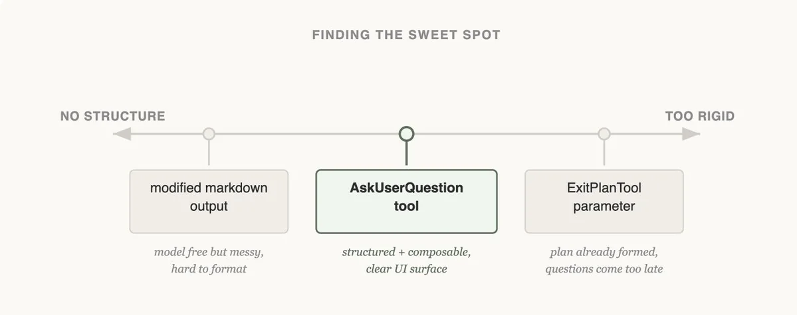
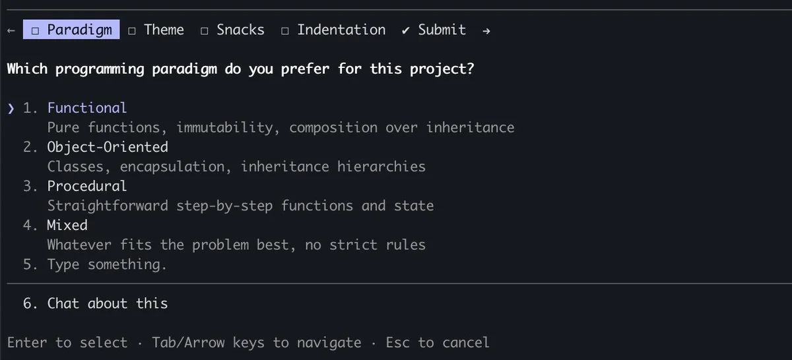
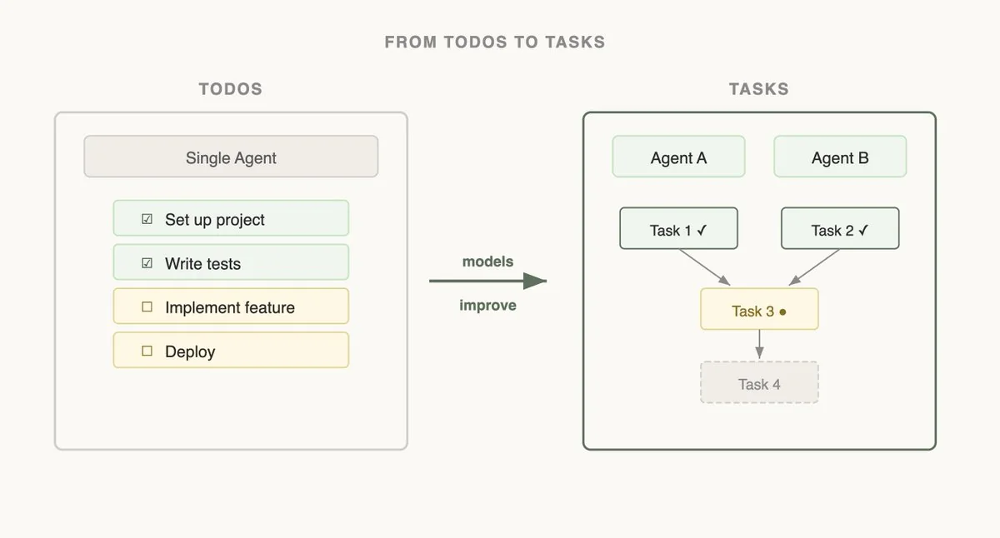

claude.dev · Agents（作者 Thariq Shihipar） · 2026-04-10
Seeing like an agent: how we design tools in Claude Code像智能体一样看世界：Claude Code 设计工具的三次试错
60 秒速览：这篇文章在说什么
译者所加，不是原文的一部分 —— 读完这 4 条，再看原文会快很多。
- 一句话结论：设计工具不是「给模型更多能力」，而是「给模型能力形状匹配的工具」。判断标准只有一个——它会不会用、愿不愿意用。
- 第一次完整案例（引导式提问）：给 ExitPlanTool 加问题参数（模型被搞糊涂：你到底要计划还是要问题）、要求模型按特定 markdown 输出（格式不稳）、最后做一个随时可调用的 AskUserQuestion 工具（成了）。
- 第二次案例（todos → tasks）：待办清单曾是必需品，模型变强后反而成了枷锁——它以为必须守住清单。于是 TodoWrite 被换成 Task 工具，后者让智能体之间能共享依赖与更新。
- 更根本的一招（渐进披露）：Claude Code 只有约 20 个工具，新增门槛很高。与其加工具，不如让模型顺着文件引用一层层自己找上下文——从 RAG 到 Grep，再到技能文件与 Claude Code Guide 子智能体。
直觉做法
- 给一个万能的 bash，其他都靠它拼
- 或者一个场景一个专用工具，越多越贴心
- 把模型需要知道的全塞进系统提示词
- 用 RAG 预检索上下文，喂给模型
本文的做法
- 工具要「形状匹配」模型当前能力，两头都不好
- 新增工具门槛很高：每多一个，模型就多一个要考虑的选项
- 知识类信息走渐进披露：给入口，让模型按需往下读
- 给搜索工具，让模型自己建立上下文
对照表是译者按原文整理，不是原文自带的表格。
读法建议：只想要方法，读第一节的三次尝试与第二节的 RAG→Grep；如果你正在给自己写的智能体挑工具，第三节的「工具越少越好，但要能自己找上下文」最值得抄。
Learn how the Claude Code team designs, tests, and evolves tools by thinking from the model's point of view.
看 Claude Code 团队如何站在模型的角度，设计、测试并演进它的工具。
One of the hardest parts about building an agent harness is constructing its tools. Claude acts completely through tool calling, but there are a number of ways tools can be constructed in the Claude API with primitives like bash, skills and code execution. (You can read more about programmatic tool calling on the Claude API in @RLanceMartin's new article). So how do you design your agents' tools? Do you give it one general-purpose tool like bash or code execution? Or fifty specialized tools, one for each use case? To put yourself in the mind of the model, imagine being given a difficult math problem. What tools would you want in order to solve it? It would depend on your own skill set! Paper would be the minimum, but you’d be limited by manual calculations. A calculator would be better, but you would need to know how to operate the more advanced options. The fastest and most powerful option would be a computer, but you would have to know how to use it to write and execute code. This is a useful framework for designing your agent. You want to give it tools that are shaped to its own abilities. But how do you know what those abilities are? You pay attention, read its outputs, experiment. You learn to see like an agent. If you're building an agent, you'll face the same questions we did: when to add a tool, when to remove one, and how to tell the difference. Here's how we've answered them while building Claude Code, including where we got it wrong first.
做一个智能体运行框架（agent harness），最难的部分之一是构造它的工具。Claude 完全通过工具调用行动，而在 Claude API 里，工具可以用多种原语来构造，比如 bash、技能 和 代码执行。（关于 Claude API 上的程序化工具调用，可以看 @RLanceMartin 的新文章。）那么，你该怎么设计智能体的工具？是给它一个像 bash 或代码执行这样的通用工具？还是五十个专用工具，一个场景一个？要站在模型的角度想，先想象自己被给了一道很难的数学题。为了解它，你想手边有什么工具？这取决于你自己的本事！纸是最低配置，但你会被手算限制住。有计算器会更好，但你得会用那些更高级的按键。最快最强的选择是电脑，但前提是你得会用它来写代码、跑代码。这套思路用来设计智能体很好用。你要给它能力匹配的工具。但你怎么知道它的能力是什么？你观察它、读它的输出、做实验。你学会像智能体一样看世界（see like an agent）。如果你在造智能体，你也会碰到我们碰到的同样问题：什么时候加一个工具，什么时候删掉一个，以及怎么分辨这两者。下面是我们造 Claude Code 时给出的答案，包括一开始错在哪。
Improving elicitation with the AskUserQuestion tool用 AskUserQuestion 工具改善引导式提问
为了让 Claude 问得好，团队试了三种做法：给 ExitPlanTool 加问题参数（把模型搞糊涂了）、要求它输出特定 markdown（格式不稳）、最后做一个随时可调用的工具（对了）。结论是：工具得让模型「愿意用、也会用」。

找甜点区：结构太少 vs 结构太多 标题是 Finding the sweet spot。一条从 no structure 到 too rigid 的光谱：最左「no structure」（自由但乱、难格式化），最右「too rigid」（计划已成型，问题问得太晚）。中间三点分别标着修改过的 markdown 输出、ExitPlanTool 加参数、AskUserQuestion 工具，只有最后这个落在两端之间的甜点区。
原文图注：Diagram titled "Finding the sweet spot": a spectrum from "no structure" to "too rigid". Modified markdown output sits near "no structure" (free but messy, hard to format). An ExitPlanTool parameter sits near "too rigid" (the plan is already formed, so the questions come too late). The AskUserQuestion tool is highlighted in the middle (structured, composable, with a clear UI surface).
这张图怎么看（4 条）
- 最左端标着 no structure：自由但乱，输出难格式化；最右端标着 too rigid：计划已成型，问题问得太晚。
- 靠近左端的是「修改 markdown 输出格式」那一次尝试——结构太松，模型经常破格。
- 靠近右端的是「给 ExitPlanTool 加参数」那一次——结构太紧，问题被塞进已经定型的计划里。
- 中间高亮的是 AskUserQuestion 工具：结构化、可组合、有明确的界面，落在甜点区。
一句话：太松会破格，太紧问得太晚，甜点区在中间。
When building the AskUserQuestion tool, our goal was to improve Claude’s ability to ask questions (often called elicitation). While Claude could just ask questions in plain text, we found answering those questions felt like they took an unnecessary amount of time. How could we lower this friction and increase the bandwidth of communication between the user and Claude?
做 AskUserQuestion 工具时，我们的目标是提升 Claude 提问的能力（通常叫 elicitation，引导式提问）。虽然 Claude 光靠纯文本也能提问，但我们发现回答这些问题花的时间多得没必要。怎么才能降低这种摩擦、提高用户和 Claude 之间的沟通带宽？
Attempt 1: Editing the ExitPlanTool尝试一：改 ExitPlanTool
The first approach we tried was adding a parameter to the ExitPlanTool to have an array of questions alongside the plan. This was the easiest fix to implement, but it confused Claude because we were simultaneously asking for a plan and a set of questions about the plan. What if the user’s answers conflicted with what the plan said? Would Claude need to call the ExitPlanTool twice? We knew this tactic wouldn’t work, so we went back to the drawing board. (You can read more about why we made an ExitPlanTool in our post on prompt caching)
我们试的第一个办法，是给 ExitPlanTool 加一个参数，让它在给计划的同时带上一组问题。这是最容易实现的改法，但它把 Claude 搞糊涂了：我们同时在要一份计划，又在问一堆关于这份计划的问题。要是用户的回答和计划冲突怎么办？Claude 是否得调用两次 ExitPlanTool？我们知道这条路不通，于是回到起点重画。（关于我们为什么要做 ExitPlanTool，可以看我们那篇讲提示缓存（prompt caching）的文章）
Attempt 2: Changing output format尝试二：改输出格式
Next, we tried updating Claude’s output instructions to serve a slightly modified markdown format that it could use to ask questions. For example, we could ask it to output a list of bullet point questions with alternatives in brackets. We could then parse and format that question as UI for the user. Claude could usually produce this format, but not reliably. It would append extra sentences, drop options, or abandon the structure altogether. Onto the next approach.
接下来，我们试了改 Claude 的输出指令，让它按一种稍作修改的 markdown 格式来提问。比如，我们可以要求它输出一串带项目符号的问题，选项放在方括号里。然后我们就能解析这段文本，把问题渲染成给用户看的界面。Claude 通常能产出这种格式，但不够稳定。它会多写几句、漏掉选项，或者干脆抛弃整个结构。于是换下一个办法。
Attempt 3: The AskUserQuestion tool尝试三：AskUserQuestion 工具

真正的 AskUserQuestion 界面 Claude Code 终端里弹出的 AskUserQuestion 界面：顶部一排页签 Paradigm、Theme、Snacks、Indentation、Submit；中间是问题「Which programming paradigm do you prefer for this project?」；下面编号选项 Functional、Object-Oriented、Procedural、Mixed、Type something、Chat about this。
原文图注：The AskUserQuestion tool in the Claude Code terminal: tabs for Paradigm, Theme, Snacks, Indentation and Submit, the question "Which programming paradigm do you prefer for this project?", and numbered options: Functional, Object-Oriented, Procedural, Mixed, Type something, and Chat about this.
这张图怎么看（4 条）
- 顶部页签 Paradigm、Theme、Snacks、Indentation 是四个问题分组，最后一格 Submit 用来提交。
- 中间的问题是 Which programming paradigm do you prefer for this project?，一次只问一个维度。
- 选项 Functional、Object-Oriented、Procedural、Mixed 是预设答案，省掉用户打字。
- 最后两项 Type something 与 Chat about this 保留了自由输入与追问的出口——结构化不等于逼选。
一句话：结构化的选项，加上自由输入与追问的出口。
Finally, we landed on creating a tool that Claude could call at any point, but it was particularly prompted to do so during plan mode. When the tool triggered we would show a modal to display the questions and block the agent's loop until the user answered. This tool allowed us to prompt Claude for a structured output and it helped us ensure that Claude gave the user multiple options. It also gave users ways to compose this functionality, for example calling it in the Agent SDK or using referring to it in skills. Most importantly, Claude seemed to like calling this tool and we found its outputs worked well. After all, even the best designed tool doesn’t work if Claude doesn’t understand how to call it. Is this the final form of elicitation in Claude Code? We doubt it. As Claude gets more capable, the tools that serve it have to evolve too. The next section shows a case where a tool that once helped started getting in the way.
最终我们落在一个方案：做一个 Claude 随时都能调用的工具，但特别提示它在计划模式下要多用。工具触发后，我们弹出一个模态框展示问题，并阻塞智能体的循环，直到用户作答。这个工具让我们能要求 Claude 输出结构化内容，也帮我们确保它一次给用户多个选项。它还给了用户组合这项能力的方式，比如在 Agent SDK 里调用它，或在技能里引用它。最重要的是，Claude 似乎很愿意调用这个工具，而且我们看到它的输出效果不错。毕竟，设计得再好的工具，如果 Claude 不知道该怎么调用，也是白搭。这就是 Claude Code 里引导式提问的最终形态了吗？我们觉得不是。随着 Claude 变得更强，服务它的工具也必须跟着演进。下一节讲一个反向案例：一个曾经很有帮助的工具，后来开始挡路。
Updating with capabilities: tasks & todos随能力更新：tasks 与 todos

从 todos 到 tasks 标题 From todos to tasks。左边：单个智能体拿着一张清单（set up project、write tests、implement feature、deploy）。中间一个箭头写着 models improve 指向右边：Agent A 与 Agent B 共享带依赖的任务——Tasks 1 和 2 已完成并喂给 Task 3。
原文图注：Diagram titled "From todos to tasks": on the left, a single agent with a checklist (set up project, write tests, implement feature, deploy). An arrow labeled "models improve" points to the right, where Agent A and Agent B share tasks with dependencies: Tasks 1 and 2 are done and feed Task 3, which is in progress, followed by Task 4.
这张图怎么看（4 条）
- 左边是单个智能体拿着清单：set up project、write tests、implement feature、deploy，一条条勾掉。
- 中间箭头写着 models improve，表示这不是替换，而是随模型能力演进的产物。
- 右边 Agent A 与 Agent B 共享任务：Tasks 1、2 已完成并汇入 Task 3，Task 3 之后再传给后续任务。
- 同样是「待办」，左侧是自我约束，右侧是协作与依赖。
一句话：从「约束自己」变成「互相协调」。
When we first launched Claude Code, we realized that the model needed a todo list to keep it on track. Todos could be written at the start and checked off as the model did work. To do this we gave Claude the TodoWrite tool, which would write or update Todos and display them to the user. But even then, we often saw Claude forgetting what it had to do. To adapt, we inserted system reminders every 5 turns that reminded Claude of its goal. As models improved, they found To-do lists limiting. Being sent reminders of the todo list made Claude think that it had to stick to the list instead of modifying it when it realized it needed to change course. We also saw Opus 4.5 also get much better at using subagents, but how could subagents coordinate on a shared todo list? Seeing this, we replaced the TodoWrite feature with the Task tool. Whereas todos are focused on keeping the model on track, tasks help agents communicate with each other. Tasks could include dependencies, share updates across subagents and the model could alter and delete them. As model capabilities increase, the tools that your models once needed might now be constraining them. It’s important to constantly revisit previous assumptions on what tools are needed. This is also why it's useful to stick to a small set of models to support that have a fairly similar capabilities profile.
刚发布 Claude Code 时，我们意识到模型需要一个待办清单来让自己不跑偏。待办可以在开头写下，模型做事时逐条勾掉。为此我们给了 Claude TodoWrite 工具：它负责写入或更新待办，并把待办展示给用户。但即便这样，我们也常看到 Claude 忘了自己要做什么。为了适配，我们每 5 轮插入一次系统提醒，重申它的目标。随着模型变强，它们开始觉得待办清单是限制。收到待办清单的提醒，反而让 Claude 觉得必须守住这份清单，而不是在发现该改路线时去改它。我们还看到 Opus 4.5 在用子智能体上强了很多，但子智能体怎么在共享的待办清单上协作？看到这些，我们用任务（Task）工具替换了 TodoWrite。待办的重点是让模型不跑偏，任务的重点是让智能体之间能沟通。任务可以带依赖、在子智能体之间共享更新，模型也可以改写和删除它们。随着模型能力提升，它曾经需要的那些工具，现在可能正在限制它。所以要不断回头审视「需要哪些工具」这个旧假设。这也是为什么值得只支持一小组能力画像相当接近的模型。
Designing a search interface设计一个搜索接口
从 RAG 到 Grep：团队把「给 Claude 上下文」改成了「让 Claude 自己找上下文」。一年之内，Claude 从几乎不能自建上下文，到能跨多层文件做嵌套搜索。
The most consequential tools we've built are the ones that let Claude find its own context. When Claude Code was first released internally, we used RAG: a vector database would pre-index the codebase, and the harness would retrieve relevant snippets and hand them to Claude before each response.. While RAG was powerful and fast, it required indexing and setup and could be fragile across a host of different environments. Most importantly, Claude was given this context instead of finding the context itself. But if Claude could search on the web, why couldn’t it also search your codebase? By giving Claude a Grep tool, we could let it search for files and build context itself. As Claude gets smarter, it becomes increasingly good at building its context when given the right tools. When we introduced Agent Skills, we formalized the idea of progressive disclosure, which allows agents to incrementally discover relevant context through exploration. Claude could now read skill files and those files could then reference other files that the model could read recursively. In fact, a common use of skills is to add more search capabilities to Claude like giving it instructions on how to use an API or query a database. Over the course of a year, Claude went from not really being able to build its own context to being able to do nested search across several layers of files to find the exact context it needed. Progressive disclosure is now a common technique we use to add new functionality without adding a tool. In the next section, we explain why.
我们做过的最重要的工具，是让 Claude 自己去找上下文的那些。Claude Code 刚在内部发布时，我们用的是 RAG：向量数据库预先索引代码库，运行框架在每次回复前检索相关片段交给 Claude。RAG 强大且快，但它需要建索引、需要配置，而且在各种不同环境里可能很脆。最重要的是，这份上下文是被给Claude 的，而不是它自己找到的。可如果 Claude 能在网上搜索，为什么不能在代码库里搜索？给 Claude 一个 Grep 工具，我们就能让它自己找文件、自己建立上下文。随着 Claude 变聪明，只要给它对的工具，它建立上下文的能力就越来越强。推出 Agent Skills 时，我们把「渐进披露（progressive disclosure）」这个想法正式化了：让智能体通过探索逐步发现相关上下文。Claude 现在可以读技能文件，而那些文件又可以引用别的文件，模型可以递归往下读。事实上，技能的一个常见用法就是给 Claude 加更多检索能力，比如告诉它怎么用一个 API、怎么查一个数据库。一年时间里，Claude 从几乎无法自己建立上下文，走到了能跨好几层文件做嵌套搜索、找到它真正需要的那点上下文。渐进披露现在成了我们常用的技巧：不新增工具，也能加上新功能。下一节解释为什么。
Progressive disclosure: the Claude Code Guide agent渐进披露：Claude Code Guide 智能体
工具不是唯一的加法。想知道「Claude Code 本身怎么用」的用户很少，把文档全塞进系统提示词只会带来上下文腐烂；于是团队做了个专门搜文档的子智能体，主智能体的上下文保持干净。
Claude Code currently has ~20 tools, and our team frequently revisits if we need all of them for Claude to be most effective. The bar to add a new tool is high, because this gives the model one more option to think about. For example, we noticed that Claude did not know enough about how to use Claude Code. If you asked it how to add a MCP or what a slash command did, it would not be able to reply. We could have put all of this information in the system prompt, but given that users rarely asked about this, it would have added context rot and interfered with Claude Code’s main job: writing code. Instead, we tried progressive disclosure: we gave Claude a link to its docs that it could load and search when needed. This worked, but Claude would pull large chunks of documentation into context to find an answer the user could have gotten in one sentence. So we built the Claude Code Guide — a subagent Claude calls whenever a user asks about Claude Code itself. The subagent does the doc-searching in its own context, follows detailed instructions on how to search and what to extract, and hands back only the answer. The main agent's context stays clean. While this isn’t a perfect solution (Claude can still get confused when you ask it about how to set itself up), we were able to add things to Claude's action space without adding a new tool.
Claude Code 目前大约有 20 个工具，我们团队经常回头审视：要让 Claude 最有效，这些是不是都需要。新增一个工具的门槛很高，因为每多一个，模型就多一个要考虑的选项。比如，我们注意到 Claude 对「怎么用 Claude Code」知道得不够。你问它怎么加一个 MCP、某个斜杠命令是干什么的，它答不上来。我们本可以把这些信息全塞进系统提示词，但既然用户很少问，那只会带来上下文腐烂，并干扰 Claude Code 的主业：写代码。于是我们试了渐进披露：给 Claude 一个指向它自己文档的链接，需要时自己去加载、去搜。这招管用，但 Claude 会把大段文档拉进上下文，只为找一个用户本来一句话就能得到的答案。所以我们做了 Claude Code Guide——一个子智能体，用户一问 Claude Code 本身的事，Claude 就调用它。这个子智能体在自己的上下文里搜文档，遵循详细的指令（怎么搜、该提取什么），只把答案交回来。主智能体的上下文保持干净。这不算完美（你问它怎么配置它自己时，Claude 还是可能糊涂），但我们在没新增工具的前提下，给 Claude 的行动空间加了东西。
Seeing like an agent is an art, not a science像智能体一样看世界：是艺术，不是科学
Designing the tools for your models is as much an art as it is a science. It depends heavily on the model you're using, the goal of the agent and the environment it’s operating in. Our best advice? Experiment often, read your outputs, try new things. And most importantly, try to see like an agent. Get started with Claude Code today. About the author: Thariq Shihipar is a member of technical staff at Anthropic, working on Claude Code.
为模型设计工具，既是科学，也是艺术。它在很大程度上取决于你用的是什么模型、智能体的目标是什么、它在什么环境里运行。我们最好的建议？经常做实验，读它的输出，试新东西。最重要的是，试着像智能体一样看世界。今天就来上手 Claude Code。关于作者：Thariq Shihipar 是 Anthropic 技术团队成员，工作于 Claude Code。
补充材料
下面几块都是译者所加，用来补上原文没展开的部分。正文里的虚线链接、虚线术语、上标数字，都能悬停看卡片；这里给出完整的清单，方便你事后再回头查。
延伸阅读地图
原文 12 处正文引用，指向 12 个不同链接；另有 3 张配图未计入。按「不读会不会误解本文」分成三档：必读 / 背景 / 可选，建议顺序即卡片上标注的数字。每条都写了「不点开也能拿到的重点」，所以你可以完全不跳转地读完这篇文章。
工具使用总览
platform.claude.com · Tool use overview
正文对应：工具调用
这是什么：官方文档：模型怎么请求调用工具、结果怎么回灌、能挂多少工具。
为什么值得点：全文的物理基础。不理解「模型只通过工具行动」，后面所有设计取舍都无从谈起。
不点开也能拿到的重点
模型输出结构化请求（工具名 + 参数），客户端执行后把结果作为新消息回灌；一次请求可以包含多个调用。
- 结构化请求与结果回灌
- 可并行多个调用
- 工具定义占用提示词空间
技能（官方文档）
code.claude.com · Skills
正文对应：技能
这是什么：官方文档：技能文件夹怎么组织、SKILL.md 怎么写、模型何时读取。
为什么值得点：文章说「技能的一个常见用法是给 Claude 加检索能力」——这一页讲清技能到底是什么形态。
不点开也能拿到的重点
一个目录一份 SKILL.md，可带脚本与资料；模型在处理相关任务时读取它，并按其中步骤执行。它是「渐进披露」的载体。
- 目录 + SKILL.md
- 按需读取
- 可引用其他文件
上下文工程的新规则
claude.dev · The new rules of context engineering
正文对应：不断回头审视
这是什么：同站文章：模型换代后，上下文该怎么给、给多少，规则变了。
为什么值得点：文章最后一句「旧假设要常回头看」就是指向它；也是「工具会变枷锁」的理论依据。
不点开也能拿到的重点
模型越强，越该少喂结论、多给入口；预检索、长清单这类「替模型思考」的做法，收益在下降。
- 少喂多给入口
- 预检索收益下降
- 随模型迭代重估
Agent SDK
platform.claude.com · Agent SDK
正文对应：Agent SDK
这是什么：官方 SDK 文档：自己搭智能体时的入口，工具、循环、权限都在这里。
为什么值得点：文章说 AskUserQuestion 这类能力可以被「组合」进自己的应用——SDK 就是那扇门。
不点开也能拿到的重点
提供智能体循环、工具注册、权限控制与会话管理；你可以自定义工具，也可以复用官方那一套。
- 自定义工具
- 内置循环
- 权限与钩子
待办追踪
platform.claude.com · Todo tracking
正文对应：待办清单
这是什么：官方文档：给智能体加待办清单的标准做法。
为什么值得点：文章讲「todos 曾经是必需品」时的对照材料；也能看出提醒频率为什么是每 5 轮。
不点开也能拿到的重点
把多步任务写成清单，逐条勾掉；可配合周期性提醒防止跑偏。文章记录了它的副作用：模型会不敢改清单。
- 清单化多步任务
- 周期提醒
- 可能限制改路线
Agent Skills（技能规范）
agentskills.io · Agent Skills
正文对应：Agent Skills
这是什么：技能这套东西的公开站点：格式、示例、生态。
为什么值得点：文章说「推出 Agent Skills 时，我们把渐进披露正式化了」——这里能看到它被写成规范的样子。
不点开也能拿到的重点
用文件夹 + SKILL.md 描述能力，模型按需读取；可引用脚本与其他文件，形成可递归探索的结构。
- 文件即能力
- 按需读取
- 可递归引用
作者那篇讲提示缓存的帖子
x.com · Our post on prompt caching
正文对应：我们那篇讲提示缓存（prompt caching）的文章
这是什么：作者本人讲提示缓存的帖子（后来扩写成同站那篇长文）。
为什么值得点：文章解释「为什么需要 ExitPlanTool」时指向它：工具集的稳定性直接关系到缓存命中。
不点开也能拿到的重点
提示缓存按前缀匹配，中途增删工具会让整段对话的缓存失效；所以状态切换要用「工具」表达，而不是换工具集。
- 前缀匹配
- 别中途换工具
- 状态用工具表达
bash 工具
platform.claude.com · Bash tool
正文对应：bash
这是什么：官方文档：一个通用 shell 工具的定义与用法。
为什么值得点：文章开头的两难就摆在它身上——一个万能 bash，和五十个专用工具，选哪个？
不点开也能拿到的重点
一个工具包打天下：能跑命令就能做很多事，但模型得自己拼命令、自己解析输出，失败方式也更难预测。
- 通用但需自行组装
- 输出难结构化
- 权限是主要风险
代码执行工具
platform.claude.com · Code execution tool
正文对应：代码执行
这是什么：官方文档：让模型写代码并由服务端执行的工具。
为什么值得点：与 bash 并列的另一个「通用工具」选项，文章拿它说明「通用工具 vs 专用工具」这条轴。
不点开也能拿到的重点
模型写一段代码，服务端在隔离环境执行并返回结果；适合数据处理与计算，但不适合需要交互式操作的任务。
- 隔离环境执行
- 适合数据与计算
- 不适合交互式 UI
Claude Code 产品页
claude.com · Claude Code
正文对应：Claude Code
这是什么：产品介绍页：这个终端里的编码智能体能做什么。
为什么值得点：文章所有工具设计都发生在它身上；没上手过的话，先看这一页再看那些取舍会更有体感。
不点开也能拿到的重点
终端内的编码智能体，约 20 个工具，靠工具调用完成读写代码、跑命令、查文档等动作。
- 终端内运行
- 约 20 个工具
- 工具设计即产品设计
为什么我们用 tasks 替换了 todos
x.com · Why we replaced todos with tasks
正文对应：任务（Task）工具
这是什么：作者讲这次替换的帖子：todos 与 tasks 的差别到底在哪。
为什么值得点：正文这段只给了结论，帖子给了动机：多智能体协作需要共享、可改、带依赖的任务。
不点开也能拿到的重点
todos 面向单个智能体的自我约束，tasks 面向多个智能体之间的协调；后者可以改、可以删、可以带依赖。
- 从自我约束到协作
- 可改写可删除
- 支持依赖关系
Claude API 上的程序化工具调用
x.com · Programmatic tool calling on the Claude API
正文对应：@RLanceMartin 的新文章
这是什么：一篇讲「程序化调用工具」的长贴：让模型写代码去调工具，而不是一个个手点。
为什么值得点：文章开头提到「工具能用多种原语构造」，这条是其中一个方向的展开。
不点开也能拿到的重点
把多步工具调用写成一段程序，由模型一次生成、批量执行；减少往返轮次，也减少中间结果对上下文的占用。
- 代码化调用
- 减少往返
- 省上下文
术语表
正文里带虚线底线的词，悬停即出解释；这里是完整 10 条，可当速查用。
模型外面那层调度：拼提示词、给工具、收结果、管循环。这篇文章讨论的全是这一层里的「工具」。
发动机不变，底盘与操控可以完全不同。
模型输出一段结构化请求（叫什么工具、参数是什么），由外部执行后把结果回灌给它。智能体「动手」的唯一通道。
让模型主动向用户提问，把模糊需求问清楚。做得好，用户少打字、模型少跑偏；做得差，用户觉得在被审问。
像好医生问诊：问在点上，不问废话。
主智能体派生出来的独立实例，有自己的上下文与指令，只把结果交回来。文章用它来避免主上下文被文档塞满。
模型此刻能看到的全部信息。这个能力越强，「给什么」就越该从「预先塞」变成「让它自己找」。
先只给入口（一个链接、一个文件名），模型需要时再逐层往下读。它让「加功能」不必等于「加工具」。
像给一本书的目录而不是整本书。
检索增强生成：先把资料建索引，请求到来时检索相关片段塞进提示词。文章用它作为「被给上下文」的代表，与「自己找上下文」对照。
先切好菜端上来，而不是让厨师自己进厨房。
仓库里的一个文件夹：一份 SKILL.md 说明加可选脚本，模型在相关任务时自己读取并照做。可以用它加检索能力而不新增工具。
先只读、只探索、写出计划，等用户确认再动手的模式。它的工具集切换方式，直接影响提示缓存是否被破坏。
模型自己维护的任务清单。文章记录了它从「必需品」变成「枷锁」的过程：模型从遵守清单，变成不敢改清单。
译者注
正文中上标数字对应这里，解释的是「直译会看不懂」或「原文本身含糊」的地方。
elicitation（引导式提问）是什么
指让模型主动向用户提问、把模糊需求问清楚的能力。它不只是一个界面功能：问题问得好，后面的计划与执行才不容易跑偏。文章把它当成一个「工具设计」问题来处理，而不是提示词问题。
ExitPlanTool 是什么
计划模式里的一个工具：模型把计划写完，调用它退出计划模式、开始执行。作者曾给它加参数来顺便提问，结果模型分不清「计划」和「关于计划的问题」——这也是为什么后来提问要独立成一个工具。
为什么 todos 会变成枷锁
每 5 轮一次的提醒本意是「别忘了目标」，但模型把提醒读成了「必须遵守这份清单」。当它在执行中发现该改路线时，反而不敢改。换成 Task 工具后，任务可以被改写、删除、带依赖、在智能体之间共享——约束变成了协作。